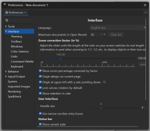
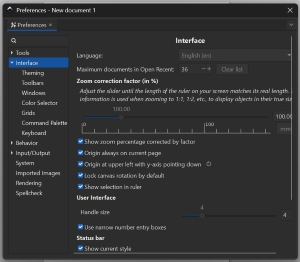
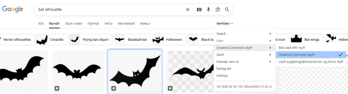
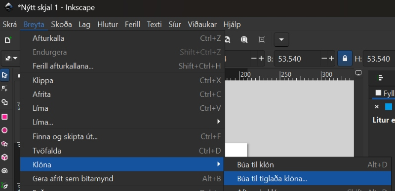
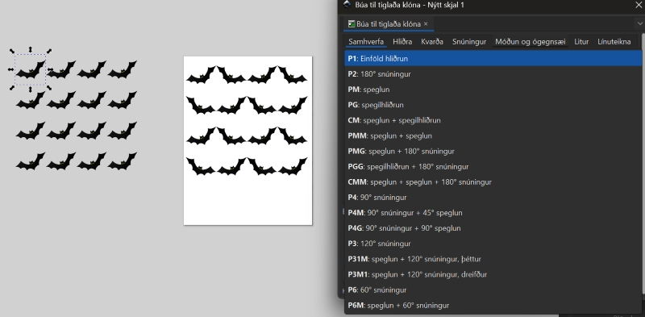
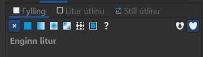

Leiðbeiningar um notkun hugbúnaðar og tækjabúnaðar
Inkscape
Að opna og nota Inkscape forritið

Inkscape forritið
Með Inkscape forritinu er hægt að hanna ótrúlega margt, til dæmis límmiða sem hægt er að skera út úr vínyl í vínylskera. Það er líka hannað eitthvað til að skera og rastera í laser. Neðar á síðunni, á hlekknum fyrir Kennslubækur, kennslumyndbönd og leiðbeiningar er kennsluefni fyrir Inkscape hjá efni fyrir vínylskera og laserskera.
Að opna Inkscape
Ef þú sérð ekki táknið getur þú skrifað Inkscape í leitargluggann neðst á skjánum.

Tvísmellið á táknið
Tvísmelltu svo á táknið þegar þú sérð það. Stundum er forritið lengi að opnast svo það er gott að bíða smástund til að sjá hvort það opnist. Annars tvísmellir þú aftur.

Að skipta um tungumál í Inkscape
Íslenska eða annað tungumál
Það er hægt að skipta um tungumál í Inkscape en það þarf að loka forritinu þegar búið er að skipta um tungumál og opna forritið svo aftur. Smelltu á Breyta og svo Kjörstillingar. Hér fyrir neðan sérðu hvernig þetta lítur út þegar forritið er stillt á íslensku og þegar það er stillt á ensku.


Íslenska eða annað tungumál - framhald
Því næst smellir þú á Viðmót (á ensku er það Interface) og þá sérðu hvar þú getur valið tungumál. Mundu svo að loka forritinu og opna það aftur.
 

Að búa til límmiða, fatalímmiða, endurskinsmerki og gluggafilmur
Kennslubækur og myndbönd
Leiðbeiningar
Á vefsíðunni Fabmennt.com er að finna kennslumyndbönd og leiðbeiningar. Þar er einnig að finna kennslubækur með leiðbeiningum um notkun vínylskera, laserskera (geislaskera) og um þrívíddarhönnun. *Bækurnar gerði Hafey Viktoría Hallgrímsdóttir hjá Fab Lab Reykjavík.


Leiðbeiningar um gerð límmiða, fatalímmiða og gluggafilmu
Smelltu hér til að skoða leiðbeiningar um hvernig hægt er að búa til límmiða, fatalímmiða, endurskinsmerki og gluggafilmu í vínylskera. Höfundar: Hafey Viktoría Hallgrímsdóttir og Þóra Óskarsdóttir.
Myndbönd um gerð límmiða, fatalímmiða og gluggafilmu
Smelltu hér til að skoða kennslumyndbönd um hvernig hægt er að búa til límmiða, fatalímmiða, endurskinsmerki og gluggafilmu í vínylskera. Höfundar: Andri Sæmundsson og Hafey Viktoría Hallgrímsdóttir.
Nokkur verkefni
Að búa til mynstur (límmiðar/fatalímmiðar og fleira)
Að finna mynd á netinu
- Bættu orðinu Silhouette eða Black and white fyrir aftan leitarorðið þitt til að fá skýra, svart/hvíta mynd.
- Smelltu á Mynd (Image).
- Smelltu svo á Verkfæri (Tools)
- Veldu Creative Commons leyfið.

- Vistaðu myndina.
Að flytja myndina inn í Inkscape
- Opnaðu Inkscape forritið
- Veldu Skrá (File) og Flytja inn (Import).
- Veldu myndina og smelltu á Opna (Open).
- Smelltu á Í lagi (OK).
Að búa til vektormynd
- Veldu Ferill (Path) og Línuteikna bitamynd (Trace bitmap).
- Þegar smellt er á Uppfæra (Update) er sýnt hvernig myndin muni líta út. Reyndar gefur það ekki alltaf nákvæma mynd en oftast virkar það sem Preview.
- Smellið svo á Í lagi (Apply). Í sumum tölvum stendur Virkja en ekki Í lagi.
- Vinstri-smelltu með músinni ofan á myndina, haltu takkanum inni og dragðu myndina til hliðar.
- Smellið til skiptis á báðar myndirnar. Þegar það stendur ,,Mynd“ (Image) neðst á skjánum má eyða þeirri mynd.
Að búa til mynstur í Inkscape
- Veldu myndina.
- Smelltu á Breyta (Edit), svo Klóna (Clone) og að lokum á Búa til tíglaða klóna (Create tiled clones).

- Á myndinn hér fyrir neðan sést hvernig búið er að nota litlu örina hægra megin til að velja CM: speglun + spegilhliðrun. Það sést einnig neðarlega að búið er að skrifa 4 raðir og 4 dálka. Útkoman sést á myndinni.

- Taktu eftir því að það eru örvar í kringum upphaflegu vektormyndina. Hún liggur í raun ofan á mynstrinu sem þú varst að búa til. Dragðu hana til hliðar. Þú getur notað þessa vektormynd til að prófa þig áfram með önnur mynstur. Prófaðu að nota örina og velja aðrar útfærslur

- Veldu mynstrið sem þú vilt eiga. Hægrismelltu á skjáinn og veldu Eiginleikar skjals (Document properties).
- Smelltu á Aðlaga stærð að innihaldi (Resize to content).
- Smelltu þrisvar á báða plúsana.
- Færðu mynstrið inn á miðja blaðsíðuna.
- Vistaðu skjalið sem .svg og sem .pdf.
Að búa til límmiða í mörgum litum
Að finna mynd á netinu sem hægt er að hafa í nokkrum litum
- Bættu orðinu Silhouette eða Black and white fyrir aftan leitarorðið þitt til að fá skýra, svart/hvíta mynd. Leitaðu eftir mynd sem hægt er að gera í a.m.k. þremur litum.
- Smelltu á Mynd (Image).
- Smelltu svo á Verkfæri (Tools)
- Veldu Creative Commons leyfið.

-
Vistaðu myndina.
-
Ath! Þú getur líka leitað að mynd í lit en hún verður þá að vera mjög skýr með miklum andstæðum (contrast) á milli litaðra svæða. Þessi mynd hér fyrir neðan var tekin af slóðinni hér
Við viljum virða höfundarrétt og á þessari síðu er óskað eftir því að vísað sé í höfundinn og leyfið sem veitt er á þennan hátt:
Image by Vectorportal.com, CC BY

Að flytja myndina inn í Inkscape
- Opnaðu Inkscape forritið
- Veldu Skrá (File) og Flytja inn (Import).
- Veldu myndina og smelltu á Opna (Open).
- Smelltu á Í lagi (OK).
Að búa til vektormynd
- Veldu Ferill (Path) og Línuteikna bitamynd (Trace bitmap).
- Þegar smellt er á Uppfæra (Update) er sýnt hvernig myndin muni líta út. Reyndar gefur það ekki alltaf nákvæma mynd en oftast virkar það sem Preview.
- Smellið svo á Í lagi (Apply). Í sumum tölvum stendur Virkja en ekki Í lagi.
- Vinstri-smelltu með músinni ofan á myndina, haltu takkanum inni og dragðu myndina til hliðar.
- Smellið til skiptis á báðar myndirnar. Þegar það stendur ,,Mynd“ (Image) neðst á skjánum má eyða þeirri mynd.

Að sundra öllu
- Veldu myndina.
- Smelltu á Ferill (Path) og veldu Sundra (Break apart). Þá verður myndin oft alveg svört en þá er til dæmis hægt að slökkva á fyllingunni og kveikja á línunni, sjá hér á eftir.
- Smelltu á Hlutur (Object) og veldu Fylling og útlína (Fill and stroke).
- Smelltu á Litur útlínu (Stroke paint) og veldu Flatur litur (Flat color – sem er skammstafað RGB) og stilltu rauðan í fullt (255).
- Smelltu á Stíll útlínu (Stroke style) og stilltu línurnar á 0.100mm. Þá sjást allar línur vel á meðan unnið er með myndina. Passaðu svo að muna eftir því að stilla línurnar seinna þannig að þær verði skurðarlínur. Það verður útskýrt betur seinna í verklýsingunni.

Að búa til ferhyrning til viðmiðunar fyrir samsetningu
- Smelltu á kassatáknið og teiknaðu lítinn ferhyrning við hliðina á myndinni. (Sjá myndina hér fyrir ofan og svo nærmyndina af ferhyrningunum hér fyrir neðan).
- Teiknaðu svo annan minni ferhyrning innan í. Stærri ferhyrningurinn verður að útlínum fyrir minni ferhyrninginn. Það koma betri útskýringar um notkun kassanna á eftir.

Að búa til sér skjal fyrir hvern lit
- Þessi límmiði á að vera í þremur litum og þess vegna þarf að búa til þrjú Inkscape skjöl.
- Hér fyrir neðan sést hvaða línur skera hvern lit. Undir línunum eru myndir af límmiðunum sem verða skornir út. Vinstra megin eru línurnar sem eiga að skera gulan, í miðjunni er línan sem á að skera svartan og til hægri eru línurnar sem eiga að skera hvítan. Gula hlutann þarf að skera tvisvar vegna þess að litlu bútarnir eiga að vera efst. Mikilvægt!: Þessi mynd er einungis sett svona upp til að útskýra. Það má alls ekki færa línurnar í sundur, heldur þarf að vista eitt skjal fyrir hvern lit. Svo má eyða línum en alls ekki færa línurnar!

- Vistaðu eitt skjal fyrir hvern lit:
- Farðu fyrst í Skrá (File) og veldu Vista sem (Save as) til að vista fyrsta skjalið í Inkscape. Gefðu skjalinu nafn, til dæmis Hauskúpa_svört.
- Smelltu svo á Skrá (File) og veldu Vista sem (Save as) til að vista annað skjalið í Inkscape. Gefðu skjalinu nafn, til dæmis Hauskúpa_hvít.
- Farðu svo aftur í Skrá (File) og veldu Vista sem (Save as) til að vista þriðja skjalið í Inkscape. Gefðu skjalinu nafn, til dæmis Hauskúpa_gul.
Skjal fyrir stærsta límmiðann/grunninn
- Skoðaðu myndina vel og veldu hvaða svæði hentar sem stærsti límmiðinn sem hinir límmiðarnir (hinir litirnir) verða límdir ofaná. Hér var ákveðið að það væri hentugt að velja ystu línuna og nota gulan sem grunn.
- Skjalið sem heitir Hauskúpa_Gul var opnað.
- Þar var öllum línum úr hauskúpunni eytt nema ystu línunni. Hinir litirnir voru svo límdir ofan á þetta form þegar búið var að skera út límmiðana.
- ATH! Þegar farið var að plokka burtu það sem á ekki að vera hjá þessum límmiða var passað að plokka litla ferhyrninginn innan úr stóra ferhyrningnum. Semsagt: Í skjalinu fyrir stærsta límmiðann á að plokka litla ferhyrninginn innan úr stóra ferhyrningnum. Hér er það þá ljósblái ferhyrningurinn sem á að plokka burt af límmiðanum.

- Svo var smellt á Skrá (File) og Skráareiginleikar (Document Properties). Svo var smellt á Aðlaga stærð að innihaldi (Resize to content) til að nýta efnið vel.
- Svo voru skurðarlínur eins og lýst er hér neðar.
Að stilla skurðarlínur
Smelltu svo á Hlutur (Object) og veldu Fylling og útlína (Fill and stroke). Veldu fyrst flipann sem er merktur Fylling (Fill). Þar á að slökkva á fyllingunni með því að velja X.

Veldu næst flipann sem er merktur Litur útlínu (Stroke paint) og kveiktu með því að velja reitinn við hliðina á x-inu. Stilltu svo rauða litinn á 255.

Veldu flipann sem er merktur Stíll útlínu (Stroke style) og stilltu breidd línunnar (width) á 0.02 mm.

Að stilla síðuna og vista skjalið
- Hægrismelltu á skjáinn og veldu Eiginleikar skjals (Document properties).
- Veldu myndina.
- Smelltu á Aðlaga stærð að innihaldi (Resize to content).
- Smelltu þrisvar á báða plúsana.
- Færðu myndina inn á miðja blaðsíðuna.
- Vistaðu skjalið sem .svg og sem .pdf.
Skjölin fyrir hina litina
- Opnaðu hin skjölin með skurðarlínunum fyrir hina litina.
- Eyddu öllum línum sem eiga ekki að vera.
- Aðlagaðu stærð skjalsins að innihaldi, eins og gert var í fyrsta skjalinu.
- Stilltu skurðarlínur, eins og gert var í fyrsta skjalinu.
- Vistaðu skjalið sem .svg og sem .pdf, eins og í fyrsta skjalinu.
- Þegar búið er að skera út límmiðana í þessum litum er stærri ferhyrningurinn plokkaður í burtu (dökkblái ferhyrningurinn sem sést hér fyrir neðan):
Límmiðabútum raðað saman
- Þegar búið er að skera út límmiðana í öllum litum er flutningsfilma notuð til að flytja límmiðabútana ofan á stóra límmiðann.
- Látið litla ferhyrninginn passa innan í stóra ferhyrninginn. Þannig lendir allt á réttum stað.

Laserskurðarvél (geislaskeri) - rasterað eða skorið úr plexígleri, timbri og fleiru
Leiðbeiningar um gerð glasamottu, Halloween skreytinga, lyklakippu, jólaskrauts og fleira
Smellið hér til að skoða leiðbeiningar um hvernig hægt er að búa til glasamottu, Halloween skreytinga, lyklakippu, jólaskrauts og fleira. Höfundar: Hafey Viktoría Hallgrímsdóttir og Þóra Óskarsdóttir.
Myndbönd um gerð glasamottu, lyklakippu, jólaskrauts og fleira
Smellið hér til að skoða kennslumyndbönd um hvernig hægt er að búa til glasamottu, lyklakippu, jólaskraut, kassa og fleira. Höfundur: Andri Sæmundsson.
Þrívíddarhönnun og þrívíddarprentun
Ýmis hugtök útskýrð
Algengar aðgerðir í þrívíddarhönnun útskýrðar
Smellið hér til að horfa á myndband sem útskýrir ýmsar aðgerðir sem notaðar eru þegar verið er að hanna hluti í 3D.

Tinkercad
Leiðbeiningar um þrívíddarprentun og hönnun þrívíðra hluta
Smellið hér til að skoða leiðbeiningar um hvernig hægt er að hanna þrívíða hluti og prenta þá út. Höfundur: Hafey Viktoría Hallgrímsdóttir.
Kennslumyndbönd um gerð þrívíðra hluta
Smellið hér til að skoða leiðbeiningar um hvernig hægt er að hanna þrívíða hluti. Höfundur: Andri Sæmundsson.
Kennslumyndbönd um þrívíddarhönnun í Tinkercad
Á vefsíðu Fab Lab Ísland er að finna kennslumyndbönd um þrívíddarhönnun í Tinkercad. Smellið hér til að skoða leiðbeiningar um hvernig hægt er að hanna þrívíða hluti í Tinkercad forritinu. Höfundur: Vilhjálmur Magnússon.
SketchUp
Kennslumyndbönd um þrívíddarhönnun í SketchUp
Á vefsíðu Fab Lab Ísland er að finna kennslumyndbönd um þrívíddarhönnun í SketchUp. Smellið hér til að skoða leiðbeiningar um hvernig hægt er að hanna þrívíða hluti í SketchUp forritinu. Höfundur: Vilhjálmur Magnússon.
Fusion 360
Kennslumyndbönd um þrívíddarhönnun í Fusion 360
Á vefsíðu Fab Lab Ísland er að finna kennslumyndbönd um þrívíddarhönnun í Fusion 360. Smellið hér til að skoða leiðbeiningar um hvernig hægt er að hanna þrívíða hluti í Fusion 360 forritinu. Höfundur: Vilhjálmur Magnússon.
Slicer for Fusion 360
Kennslumyndband um notkun Slicer for Fusion 360
Á vefsíðu Fab Lab Ísland er að finna kennslumyndbönd um hvernig hægt sé að umbreyta þrívíddarskrám þannig að módel sé sneitt niður. Smellið hér til að skoða leiðbeiningar um hvernig hægt er að umbreyta þrívíðum hlut í sneiðar í Slicer for Fusion 360 forritinu. Höfundur: Vilhjálmur Magnússon.